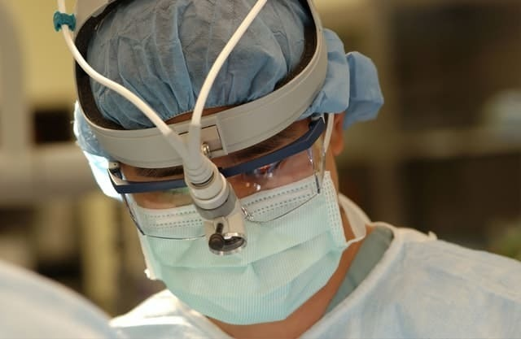

カルチノイド症候群の鍼灸
神経内分泌腫瘍がセロトニン等を過剰分泌し顔面紅潮や下痢を起こす症候群。専門医の腫瘍治療を最優先に、安定期のQOL緩和を補完します。
まず知っておきたい要点と施術方針
消化管や肺などに生じる神経内分泌腫瘍（カルチノイド腫瘍）がセロトニン、ブラジキニン、ヒスタミン、プロスタグランジンなどのホルモン様物質を過剰分泌し、肝臓での分解を回避して全身循環に入ることで発症します。特徴的な症状は皮膚の紅潮、腹部痙攣、繰り返す下痢、喘鳴などで、放置すると心臓弁膜障害やカルチノイドクリーゼを招く恐れがあるため、専門医による手術・ソマトスタチンアナログ等の治療が不可欠です。（公式解説）
このようなお悩みはありませんか？
- ✓顔や首が急に赤くほてる（顔面紅潮発作）ことがある
- ✓繰り返す水様性の下痢や腹部の痙攣・腹痛に悩んでいる
- ✓喘鳴や息苦しさ、動悸・強い倦怠感が続いている
- ✓腫瘍治療と並行して日々の症状やストレスを穏やかに和らげたい
当院の施術アプローチ
院長YouTube解説・関連動画
カルチノイド症候群でまず見られる症状は不快な紅潮、腹部の痙攣、下痢
カルチノイド症候群の主な症状は、痙攣痛と下痢です。この症状は、腫瘍が腸を詰まらせることによって起きます。
カルチノイド症候群で初めに現れることが多い症状は不快な紅潮、腹部の痙攣、下痢です。不快な紅潮は、血管が広がることによって起きるもので、頭頸部に現れることが多いです。紅潮によって、皮膚の色が赤色やすみれ色、紫色に変わることがあります。
腹部の痙攣と下痢は、腸の収縮が過剰になることによって起こります。腸で栄養をきちんと吸収できないため低栄養になり、脂肪性の匂いの強い脂肪便が見られます。
心臓も傷ついてしまった場合は、脚の浮腫など右心不全の症状が見られたり、肺に空気がうまく流れることができなくなり喘鳴や息切れなどの症状が現れたりすることもあります。男性の場合は、勃起障害が起こることもあります。
① 顔面紅潮
突然、顔や頸部が赤くなり、温かく感じます。数分〜数時間続き、日に何度も起こることもあります。セロトニン、ブラジキニン、ヒスタミンが血管を拡張して発症します。
② 下痢
水様性で慢性的、時に1日数回〜10回以上起こります。セロトニンが腸管蠕動と分泌を亢進させるためです。栄養吸収不良を伴い、体重減少や脱水を引き起こすこともあります。
③ 喘鳴、呼吸困難
気道平滑筋の収縮や粘膜浮腫によって起こる喘息に似た発作性の呼吸症状です。主にヒスタミンやセロトニンの作用で起こります。
④ カルチノイド心臓病
長期的に高濃度のセロトニンにさらされることで、三尖弁閉鎖不全、肺動脈弁狭窄など右心系の線維化が進行します。
⑤ 皮膚や全身の症状
顔面や頚部の熱感、灼熱感、血圧低下、発作後の倦怠感が起こります。

カルチノイド症候群の改善方法は、手術か薬です。腫瘍を取り除くことでカルチノイド症候群の改善が可能な場合は、手術によって腫瘍を取り除きます。薬は、カルチノイド症候群の症状を和らげることを目的として使用します。
腫瘍を取り除くことで改善する可能性があるのは、カルチノイド腫瘍が虫垂や小腸、直腸、肺などの特定の１箇所に限定されている場合です。
腫瘍が肝臓に転移している場合は、手術をしたとしてもカルチノイド症候群を改善することは難しいです。しかし、手術をすることで症状が和らぐことはあります。
放射線などはカルチノイド腫瘍にはあまり効果がありません。しかし、ストレプトゾシンやフルオロウラシルのように特定の薬を使うことで、症状を和らげることができるのです。紅潮の症状は、オクトレオチドで改善することができます。
・根本的な改善方法
腫瘍の除去、抑制です。カルチノイド症候群はカルチノイド腫瘍が産生するホルモン類の過剰分泌が原因なので、まずは腫瘍そのものを減らすことが重要です。
① 外科的切除
腫瘍が局所に限局していれば完全切除を目指します。肝転移があっても、可能な場合は転移巣も切除します。
② 肝動脈塞栓術、肝動注化学法
肝転移が多く切除できない場合に、肝動脈から腫瘍の栄養血管を塞いで腫瘍縮小を狙います。塞栓と同時に抗がん剤を注入する場合もあります。
③ 分子標的・放射性同位元素法
PRRTはソマトスタチン受容体に結合する放射性物質を投与し、腫瘍細胞を選択的に破壊する方法です。分子標的薬も症例に応じて使用します。
・症状のコントロール（ホルモン過剰の抑制）
① ソマトスタチンアナログ
オクトレオチド、ランレオチドでセロトニンや他の活性ペプチドの分泌を抑制します・紅潮、下痢、喘鳴などの発作を軽減し、心臓の病気の進行を遅らせます。
② インターフェロンα
腫瘍増殖抑制とホルモン分泌抑制の両方に作用します。ソマトスタチンアナログとの併用もあります。
③ 下痢への対処法
ロペラミド、整腸剤を使います。消化吸収不良に対しては栄養補助を行います。
④ 紅潮・血圧変動への対応
発作時には静脈路確保し、生理食塩水・昇圧薬などで対応します。手術や麻酔前にはオクトレオチドを予防的に投与し、カルチノイドクリーゼを防ぎます。
カルチノイド症候群はホルモン産生腫瘍由来のため鍼灸で直接腫瘍を改善することはできません。しかし、鍼灸は、症状緩和やQOL向上には有用な可能性があります。
下痢の緩和：脾経・胃経の経穴で消化機能を整える。
ストレス軽減：交感神経過緊張を抑える。
倦怠感・免疫サポート：気血を補う。
紅潮発作の緩和補助：自律神経調整により血管反応の急激な変化を抑制。
カルチノイド腫瘍は、胃や小腸にできると顔面紅潮や下痢などのカルチノイド症候群の症状が現れます。
しかし、大腸にできた場合は、腫瘍が大きくなり表面に潰瘍ができると血便が見られるようになりますが、大きくなるまでは症状が現れることはほとんどありません。
そのため、大腸のカルチノイド腫瘍のほとんどは、他の症状で大腸内視鏡などをした時、偶然見つかります。
内分泌のお悩みのツボ図解とセルフケア
実際の施術ではお一人おひとりの体質・症状に合わせて選穴しますが、内分泌・代謝領域の補完ケア（2型糖尿病・DPN・甲状腺QOL・肥満/メタボ）の臨床でよく用いられる代表的なツボの目安です。

📌 代表的なツボの詳細一覧表を開く（6穴） ▼
| ツボ名 | 位置の目安 | 主な狙い | セルフケアの注意点 |
|---|---|---|---|
| 中脘（ちゅうかん） | みぞおちとおへそのちょうど中間 | 消化・代謝バランス調整、食べ過ぎ・胃もたれ対策 | 食直後の強圧は避け、吐く息に合わせ優しく |
| 天枢（てんすう） | おへそから左右それぞれ指3本分外側 | 腸蠕動促進・内臓脂肪/メタボケアの頻用穴 | 腹部膨満や術創直後は避ける |
| 足三里（あしさんり） | 膝外側下のくぼみから指4本分下、すね外側 | 糖・脂質代謝サポート、倦怠感の緩和 | 糖尿病で知覚鈍麻がある場合はお灸の熱傷に厳重注意 |
| 三陰交（さんいんこう） | 内くるぶし頂点から指4本分上、すね骨の際 | 内分泌・自律神経バランス、冷え・DPNケア | 糖尿病性神経障害時はお灸を避け優しい圧のみ |
| 豊隆（ほうりゅう） | 外くるぶしと膝の中間、すね外側の筋の盛り上がり | 脂質代謝・むくみ・単純性肥満ケアの定番穴 | 抗血栓薬服用中は強圧による内出血に注意 |
| 太谿（たいけい） | 内くるぶしとアキレス腱の間のくぼみ | 甲状腺機能低下に伴う冷え・疲労感、足部血流 | 足部に傷・水虫・知覚鈍麻がある場合は施灸厳禁 |
国際査読論文の科学的エビデンス
国際的な医学データベース（PubMed・Cochrane等）で報告されている内分泌・代謝領域の補完ケア（2型糖尿病・DPN・甲状腺QOL・肥満/メタボ）領域の代表的な査読済み鍼灸研究をまとめています（標準治療との併用や研究上の限界を含めて正確に掲載）。
📚 査読論文データ・PubMed出典リンクを開く（4件） ▼
| 年・研究デザイン | 対象・規模 | 主な結果 | 限界・出典 |
|---|---|---|---|
| 2026年 メタ解析 | 2型糖尿病 20 RCTs（n=1,479） | 空腹時血糖（SMD -0.52, p=0.009）、HbA1c（SMD -0.76, p=0.002）、HOMA-IR（p<0.0001）を有意低減。 | 将来研究のばらつき懸念。食事・運動・薬物療法の継続必須。 Postgrad Med J (PMID: 41052150) |
| 2025年 メタ解析 | 糖尿病性末梢神経障害（DPN）14 RCTs（n=1,169） | 偽鍼比でVAS疼痛-1.44cm、神経症状スコアTCSSも有意改善（WMD -1.22）。 | GRADE確実性は低い。足部の熱傷・感染予防に細心の注意。 Curr Pain Headache Rep (PMID: 40220243) |
| 2024年 メタ解析 | 橋本病（慢性甲状腺炎）14 RCTs（n=1,020） | レボチロキシン単独比でTPOAb・TGAb低下およびTSH・FT3・FT4の調整を示唆（p<0.00001）。 | 中国国内RCT中心・盲検化不足。甲状腺薬の自己中断は厳禁。 Medicine (PMID: 38428856) |
| 2024年 メタ解析 | 単純性肥満 25 RCTs（n=2,018・生活習慣併用） | 生活習慣単独比で体重-4.73・BMI -2.11・腹囲-4.96（p<0.00001）、中性脂肪・LDLも有意改善。 | 介入期間・方法の異質性高、長期リバウンド防止は要検証。 Diabetes Metab Syndr Obes (PMID: 39582784) |
参考文献・出典
- 銀座そうぜん鍼灸院「カルチノイド症候群の公式解説ページ」
- 2026年 メタ解析（2型糖尿病 20 RCTs（n=1,479））— Postgrad Med J (PMID: 41052150)
- 2025年 メタ解析（糖尿病性末梢神経障害（DPN）14 RCTs（n=1,169））— Curr Pain Headache Rep (PMID: 40220243)
- 2024年 メタ解析（橋本病（慢性甲状腺炎）14 RCTs（n=1,020））— Medicine (PMID: 38428856)
- 2024年 メタ解析（単純性肥満 25 RCTs（n=2,018・生活習慣併用））— Diabetes Metab Syndr Obes (PMID: 39582784)
よくある質問（FAQ）
Q. カルチノイド腫瘍は鍼灸で治せますか？▼
Q. どのような症状緩和のサポートが期待できますか？▼
あわせて読まれる関連疾患（内分泌のお悩み）
皮膚の下に余分な水分がたまる状態。腎臓・心臓・肝臓等の基礎疾患確認を優先し、血流低下や自律神経由来のむくみを穏やかに整えます。
脳下垂体の良性腫瘍により成長ホルモンが過剰分泌される疾患。専門医の手術・薬物療法と合併症管理を最優先し、安定期の体調ケアを補完します。
下垂体前葉ホルモンの分泌低下で全身の代謝や血圧・性機能に影響する疾患。専門医のホルモン補充を最優先し、安定期の体調管理を補完します。
粘液腫・皮膚色素斑・内分泌機能亢進を伴う多発性腫瘍症候群。専門医の定期検査と治療を最優先し、安定期の心身ケアを穏やかに補完します。
植物ステロールが体内に蓄積し黄色腫や早発性動脈硬化を招く希少遺伝疾患。専門医の管理を軸に、安定期の体調・自律神経ケアを補完します。
異常蛋白質アミロイドが心臓・腎臓・神経等の臓器に沈着する指定難病群。専門医の病型別標準治療を最優先し、安定期の許可下のみ穏やかにケアします。
おひとりで悩まず、まずはご相談ください
銀座本院・川口・大宮・横浜・博多・田無の各院でご予約を承っております。